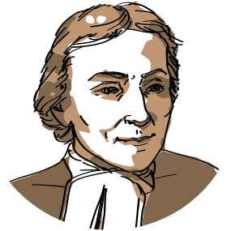

Quiénes somos
Una institución de inspiración cristiana con carisma lasallista y más de 300 años de tradición educativa. Formamos parte de una red global presente en 82 países, comprometida con la excelencia académica, la innovación y el servicio a la comunidad.
